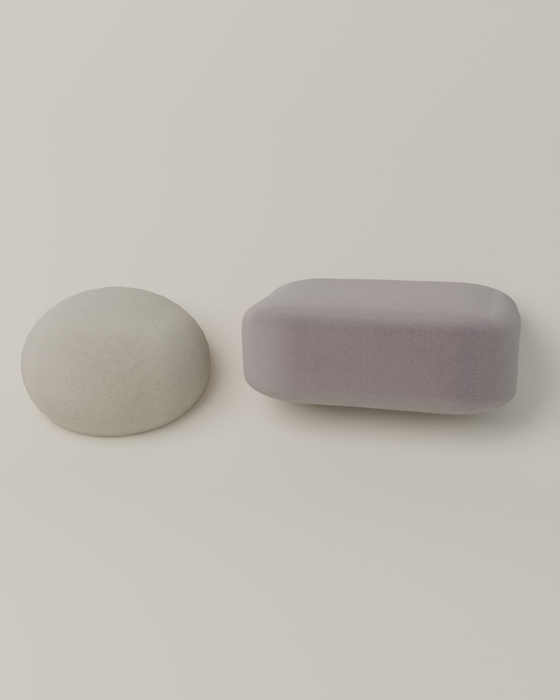
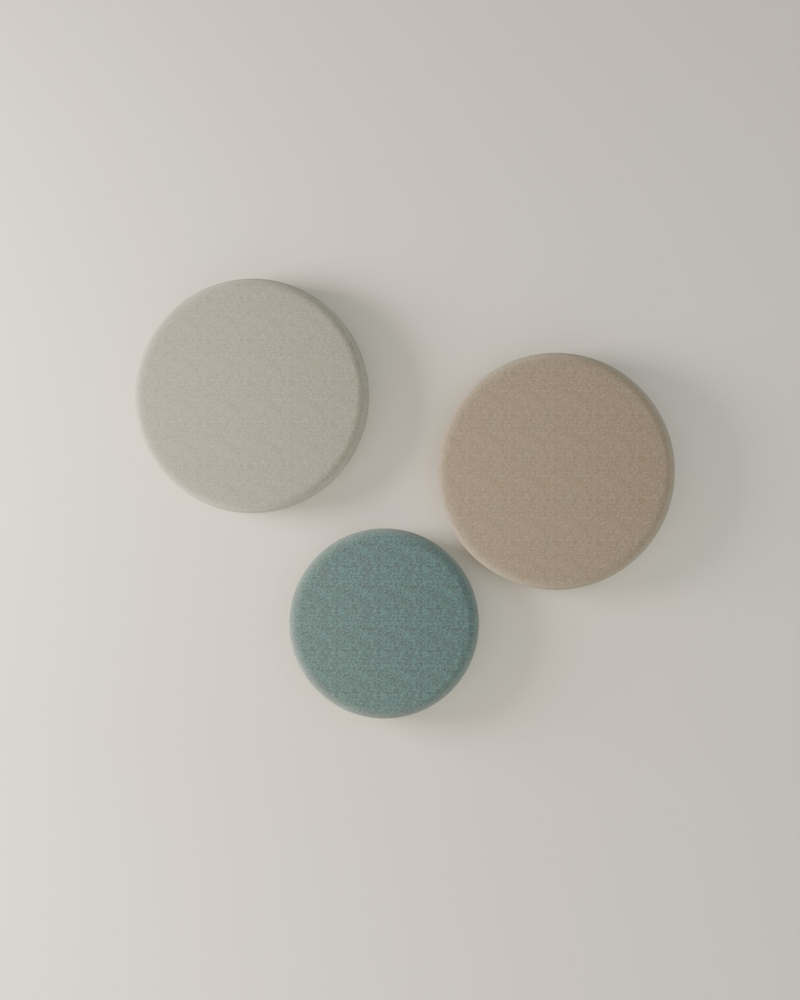
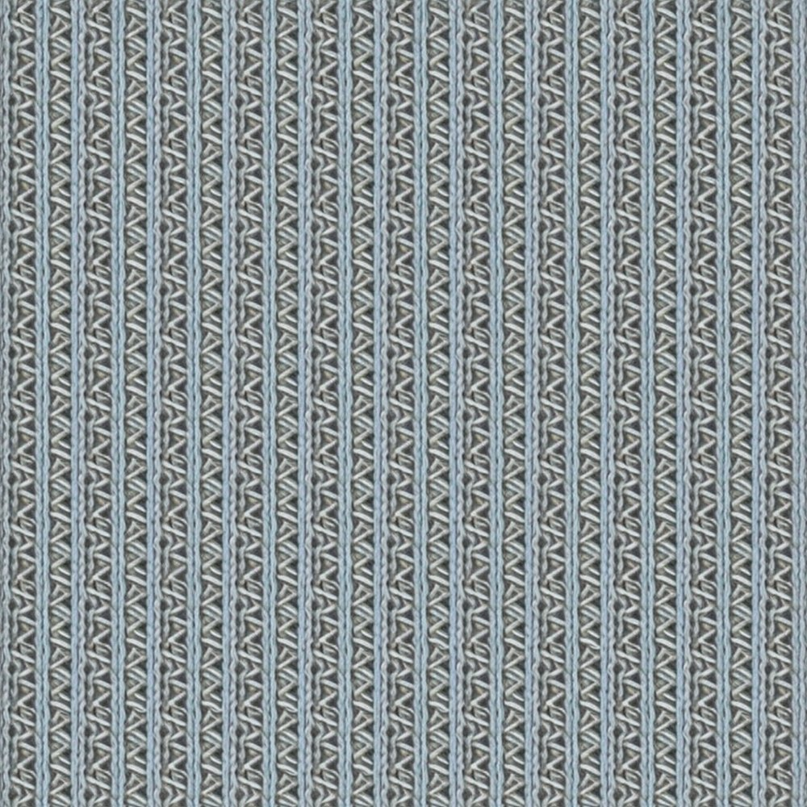

Conceptual Framework and Creative Direction
Themes drawn from art history and philosophy that set the direction for textile and material design.
- T1
Fabric structure and structural surface
Layers cover; structure remains.
- T2
Every product a readymade
First the hand, then the choice.
- T3 · selected
Dematerialization vs rematerialization
The measure is the gap between intention and result.
- T4
Who owns it
Not who made it, who owns it.
- T5
Copy paste repeat
A copy of a copy, and that's okay.
- T6
Measures and senses of place
The map shows the method, not the place.
- T7
Happening
Barely felt, now seen.
- T8
The facade
The picture is not the thing.
- T9 · selected
The trace of time
Wear is what time writes on a surface.
- T10 · selected
Restoration, quiet and sensory care
Soft, but with presence.
- T11
Hybrid space and guided movement
Materials have life; felt pulse and texture calm the body and guide movement without signals. Shared spaces with split attention.
Visualization
A theme is first visualized before anything is sampled. Its reading is reduced to three questions: what form it takes, what color, material and finish it asks for, and how it sits in a composition. Each question gets one study, so the theme can be judged by eye before it is judged by hand.

(01) Form
(02) CMF (03) Composition
(03) CompositionFrom a reading to a material
Each project starts from a theme, not from a product. A reading in art history or philosophy sets the question. References are gathered and cited, and colors and shapes are pulled from them into 2D studies. Details are then altered until something unexpected appears, the surface is constructed and visualized as material, and the result is staged against other materials. Market and industry research decides where it can go.
Processes and tools
One operation runs every project, so the work can be repeated, checked and handed over.
- Research
- theoretical research notes, a PDF library of art history and theory, cited image references
- Standards
- style guide (type, grid, neutral palette, image grading), textile work instructions
- Color
- measured in CIE Lab against brand palettes and season reports
- 2D
- Illustrator, Photoshop, Vizcom; alter-and-discover studies
- Construction
- weave and warp-knit repeats generated from lapping and interlacing paths
- 3D
- Blender 5.3 Cycles, generated weave maps, cloth simulation, AgX view transform
- Market
- company studies, trend reports, category and supply research
Where the screen stops
A screen cannot show touch. These images suggest value shifts and grain, not hand feel, and their colors drift from the measured values through the render.
Simulation runs ahead of the hand. Generated maps and renders are stand-ins until a physical mockup is made, sewn and handled; drape, weight and seams only show their faults in a prototype, and that is where the work is tested.
Materials change with time and use. A render shows the first day; watching a sample fade, wear and age shows the rest, and that takes time no software can shorten.
Process
Colors and shapes from the references
Colors and shapes are pulled from cited references and measured, then redrawn as 2D studies and inspiration images. Nothing is traced; the reference sets the range.
Alter and discover
A detail is changed one step at a time, a lap, a float, a repeat, until the result does something the reference did not. The useful variations are kept and the rest are logged.

Surface construction, visualized as material
The surface is built as a construction, from existing knowledge or from techniques learned for the project, and turned into a material: color, height and roughness maps that behave like cloth under light.

Staged, lit and paired
The material is placed on forms, lit and paired with other materials, so it can be judged in different material and visual contexts rather than as a flat swatch.

Placed in the market
Marketing and industry research, brand studies and season reports place the material: who it suits, at what price point and against which existing products.